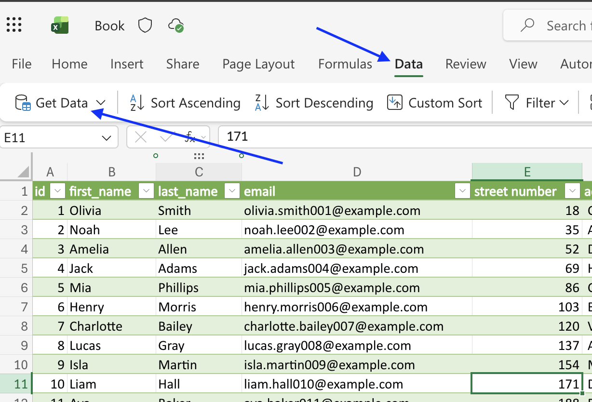
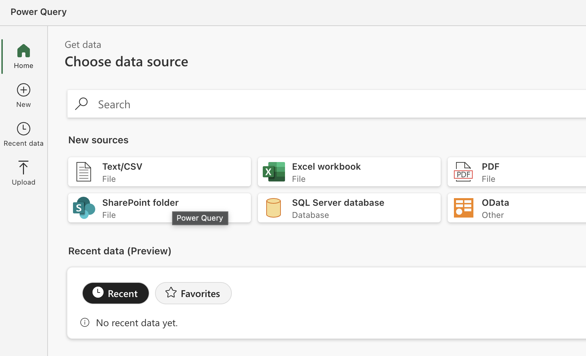
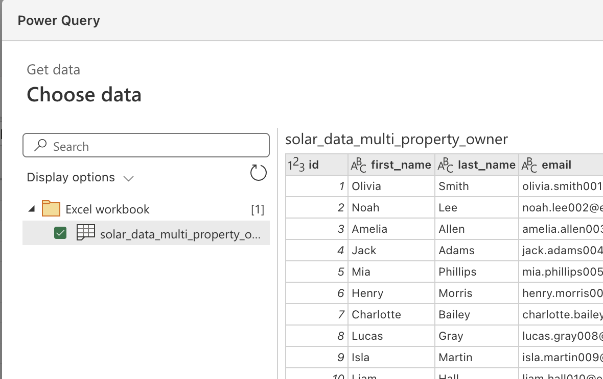
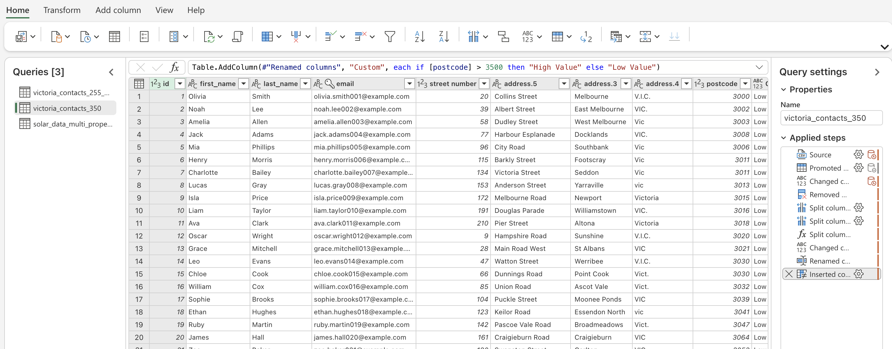
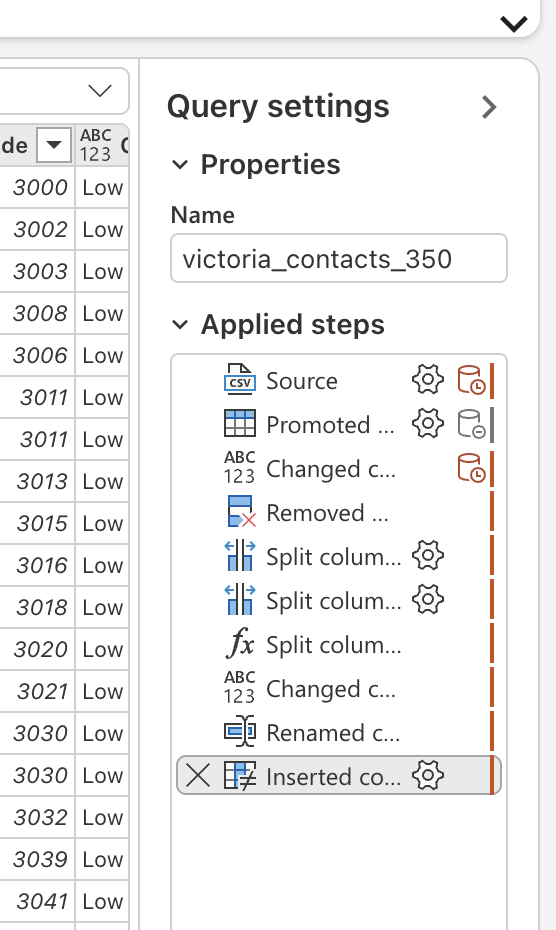
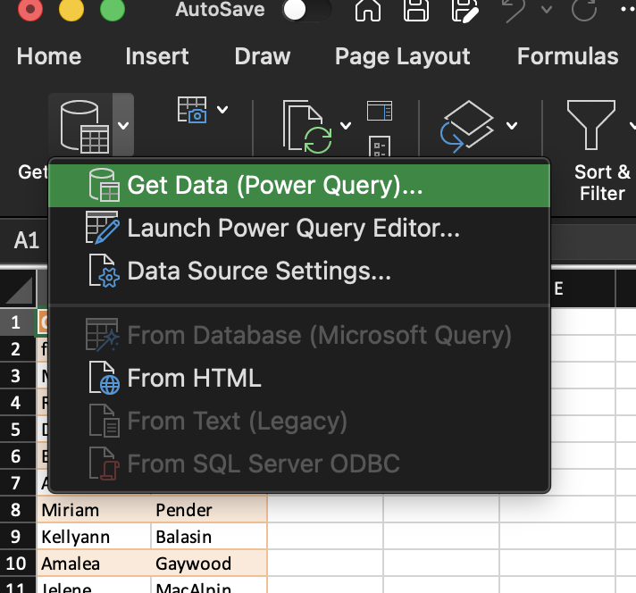

4. Power Query Fundamentals
4.1 Introduction
As datasets become larger and more complex, manual cleaning in Excel becomes time consuming and difficult to repeat.
Power Query allows us to create repeatable data transformation workflows that can be refreshed whenever new data becomes available.
Instead of cleaning data manually every time, we can build a transformation process once and reuse it.
By the end of this module, you will be able to:
- Load data into Power Query
- Understand query steps
- Perform common transformations
- Apply transformations consistently
- Refresh transformed datasets when source data changes
4.2 What is Power Query?
Power Query is a data transformation and preparation tool built into Microsoft Excel.
It allows users to:
- Import data
- Clean data
- Transform data
- Combine data
- Prepare data for analysis
Rather than modifying source data directly, Power Query records the transformation steps you apply.
These steps can then be replayed whenever data is refreshed.
4.3 Why Use Power Query?
Consider the following task:
Every month you receive:
- A new spreadsheet
- Different records
- Similar structure
You could manually:
- Delete blank rows
- Remove unnecessary columns
- Standardise values
- Remove duplicates
every month.
Or you could create a Power Query transformation once and simply refresh it each month.
4.3.1 Benefits of Power Query
- Repeatable
- Automated
- Auditable
- Refreshable
- Handles large datasets
- Reduces human error
- Saves time
4.4 Understanding the ETL Process
Power Query primarily supports the Transform phase of ETL.
4.4.1 Extract
Data is collected from a source.
Examples
- Excel workbook
- CSV file
- Database
- Website
4.4.2 Transform
Data is cleaned and standardised.
Examples
- Remove blanks
- Rename columns
- Standardise formats
- Remove duplicates
4.4.3 Load
The cleaned data is loaded into:
- Excel tables
- Pivot Tables
- Pivot Charts
- Power BI
- Databases
4.5 Accessing Power Query
In Excel:
1 2 | |
Common data sources include:
- Excel Workbook
- CSV
- Text Files
- Folder
- Database
- Web
Click to show image

4.6 Loading an Excel Worksheet
Example
Source workbook:
1 | |
Contains:
1 | |
worksheet.
Power Query allows us to import the worksheet directly into a query.
4.6.1 Steps
- Data
- Get Data
- From Workbook
- Select workbook
- Select worksheet
- Transform Data
The Power Query Editor opens.
Click to show image

Click to show image

4.7 Understanding the Query Editor
The Query Editor is where transformations occur.
The main areas are:
4.7.1 Preview Window
Displays the current data.
4.7.2 Queries Pane
Displays available queries.
4.7.3 Applied Steps
Displays all transformations that have been applied.
4.7.4 Ribbon
Contains transformation tools.
Click to show image

4.8 Understanding Applied Steps
Every action in Power Query becomes a step.
Example Workflow
1 | |
↓
1 | |
↓
1 | |
↓
1 | |
↓
1 | |
Each transformation appears in the Applied Steps panel.
Click to show image

4.9 Activity: Load and Inspect Data
Download the Excel workbook of names here
Load the names into Power Query. We will use this loaded data set in the next module.
Tip
If you end up back in the Excel workbook instead of the Power Query Editor, click Data → Get Data → Launch Power Query Editor to get back to the Power Query Editor.
Click to show image
